Tu plan
Duración-
Desde-
Precios orientativos de Booksy. El definitivo te lo confirma Ruth tras ver tu pelo.
4,7 en Google · 295 reseñas
Soy Ruth Seguel, estilista y colorista en Lloret de Mar. Antes de teñir miro cómo está tu pelo: primero lo cuidamos y después le damos el color que buscas.
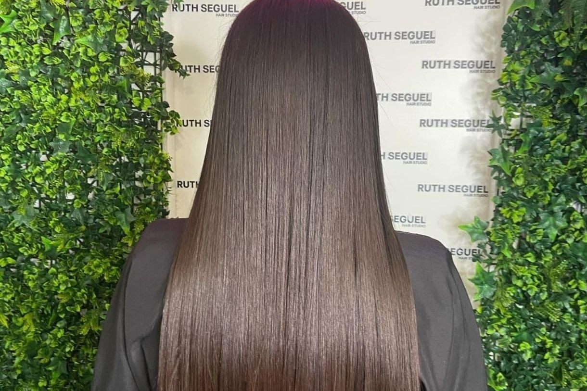
Un color bonito dura poco sobre un pelo roto. Por eso cada servicio de color empieza igual: mirando, escuchando y cuidando.
Miramos tu pelo y tu cuero cabelludo, cómo lo tratas en casa y qué quieres conseguir. Si hace falta, te lo digo con sinceridad.
Si tu pelo está seco o dañado, lo reparamos antes del color con tratamientos de enlaces, Kevin Murphy o GOA Organics.
Balayage, babylights, mechas o color sin amoníaco. Elegimos el tono que te favorece y lo matizamos para quitar los amarillos.
Te llevas una rutina sencilla y los productos adecuados para que el brillo y el color duren semanas.
«Antes de realizarme el aclarado, me explicó que era necesario hacer un tratamiento para fortalecer mi cabello […] Me encantó que priorizara la salud de mi pelo y no se limitara simplemente a hacer el servicio.»
Bea, reseña en Google
Pasa el cursor por las fotos y mira cómo brilla el pelo.Toca una foto para ver el brillo.
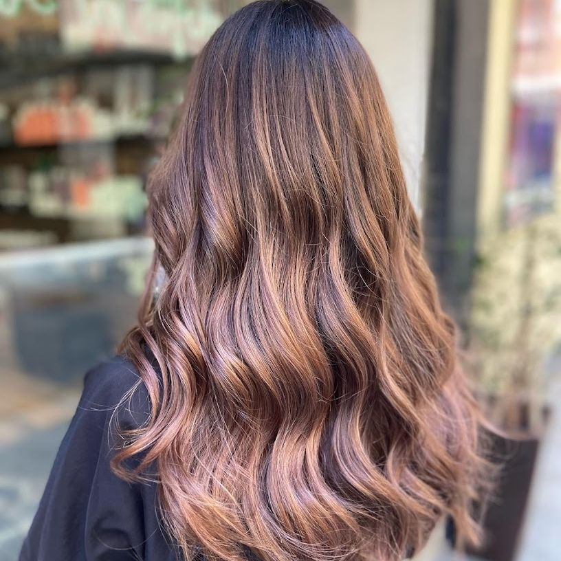
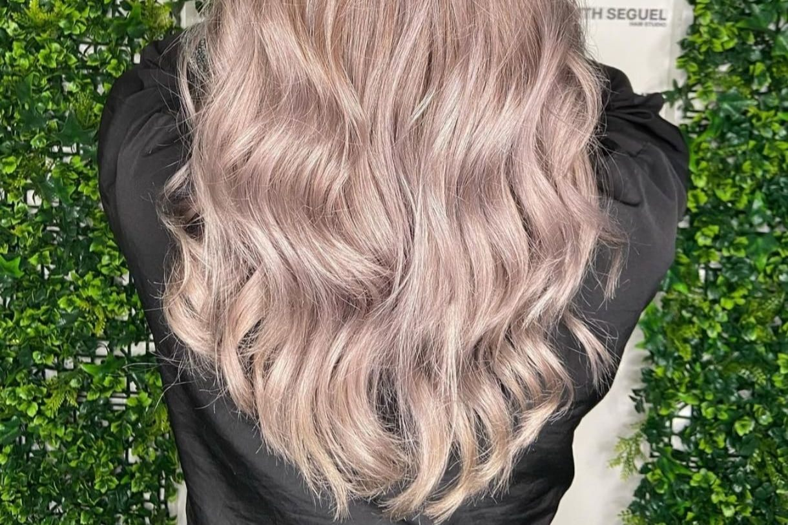
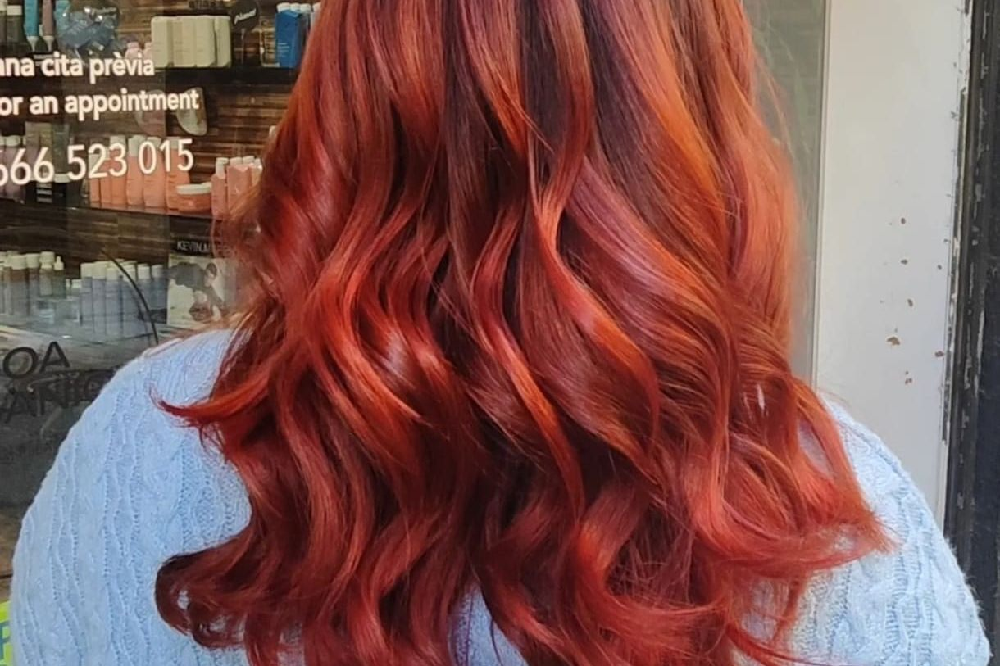
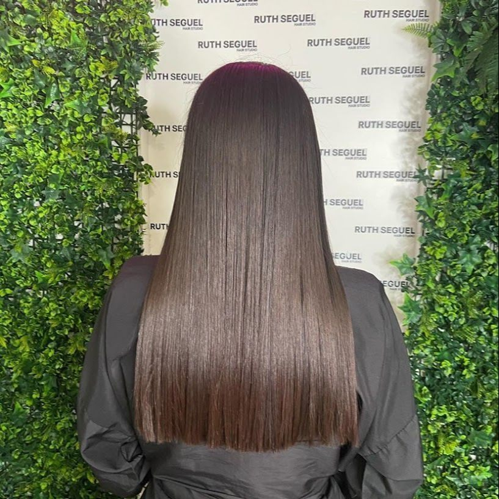
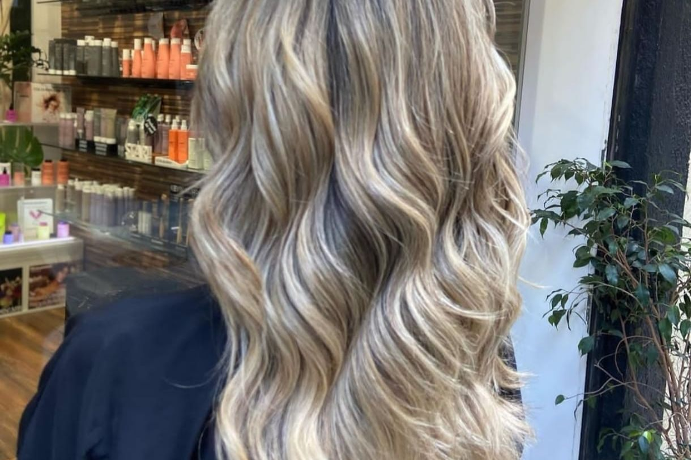
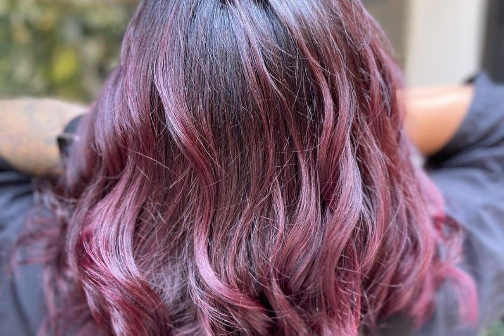
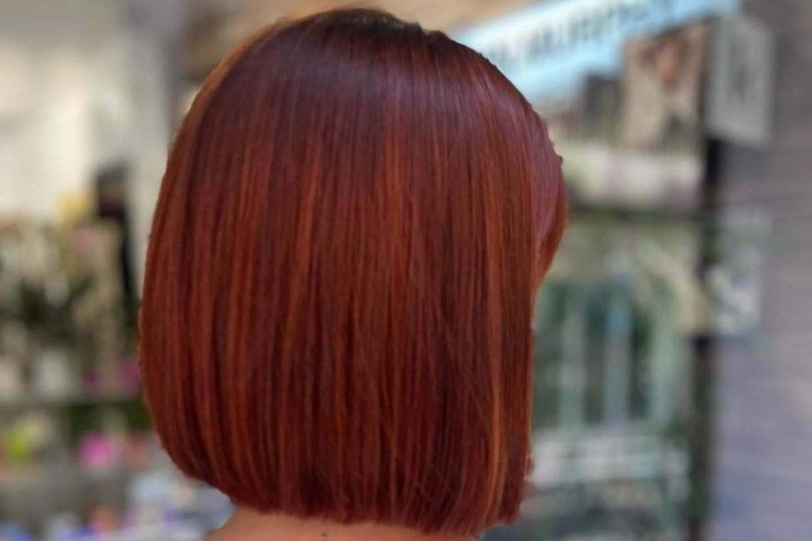
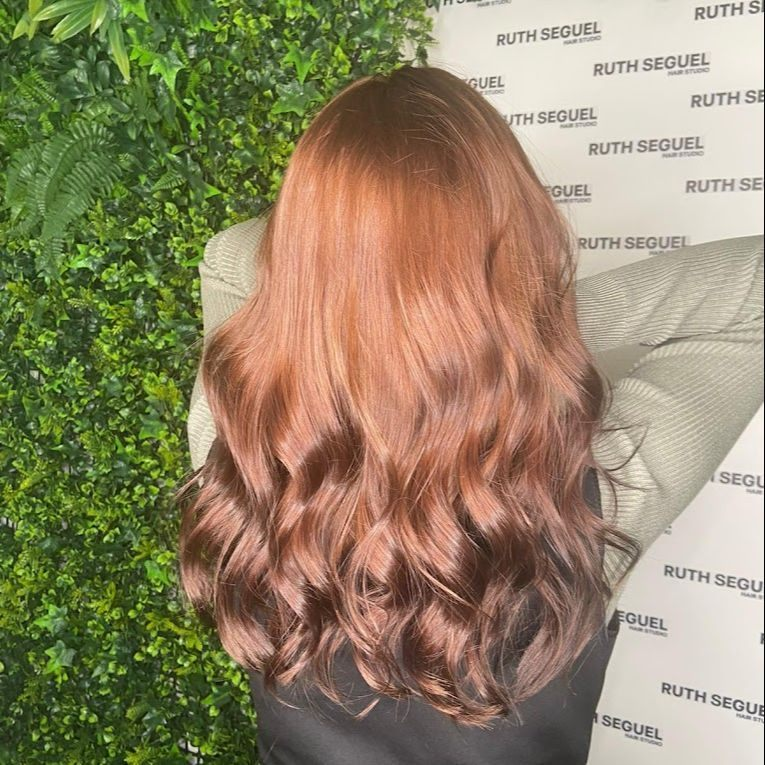
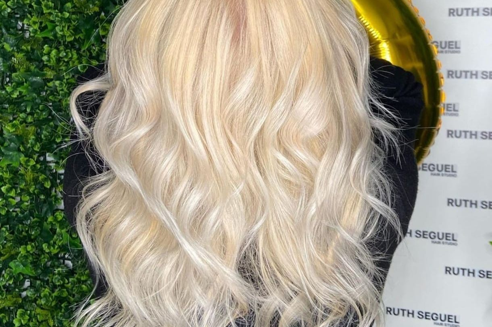
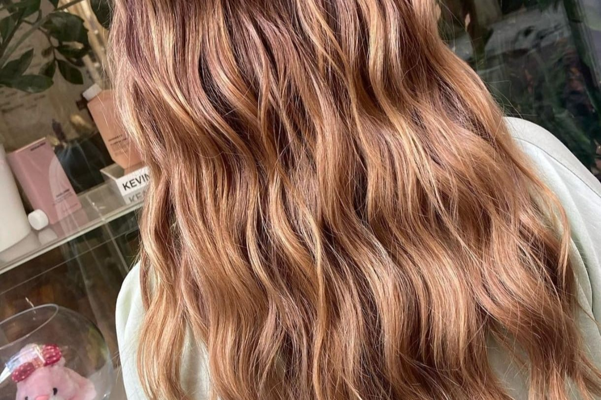
Contesta tres preguntas y te enseño qué servicios necesitarías, cuánto dura la cita y el precio orientativo según Booksy.
Tu plan
Precios orientativos de Booksy. El definitivo te lo confirma Ruth tras ver tu pelo.
Los mismos precios que en Booksy. Los marcados con «desde» dependen del largo y de la cantidad de pelo.
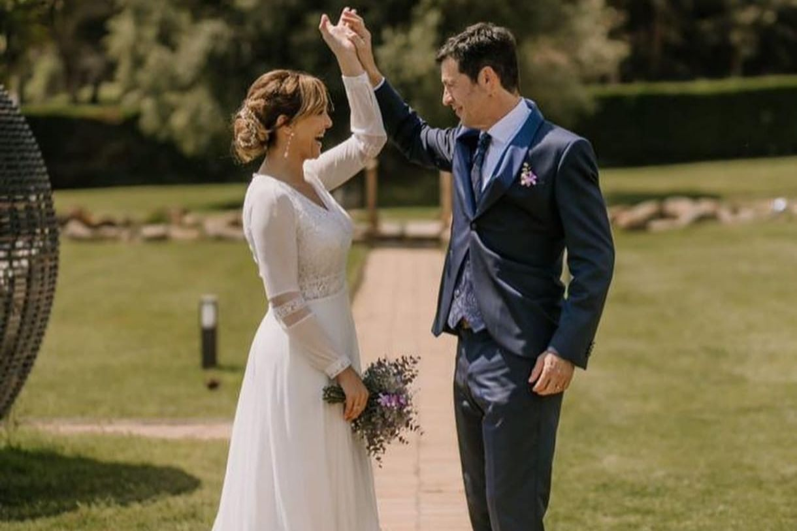
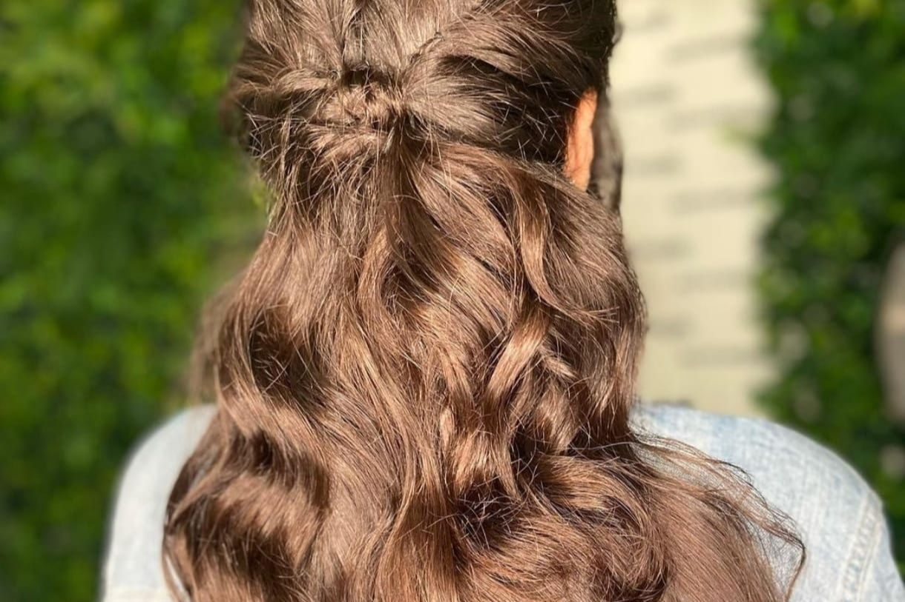
Te asesoro, hacemos una prueba de peinado y te propongo un look actual. El día de la boda incluye un tratamiento de nutrición o brillo y el peinado. Puedo ir a tu casa o al lugar de la boda.
Fabiola se ocupa de la manicura y la pedicura: manicura rusa, semipermanente, refuerzo de gel y extensiones. Puedes hacerte las uñas mientras te pones el color.
«Fabiola es una chica muy profesional y su energía transmite paz […] un trabajo impecable»
Jessica, reseña en Booksy
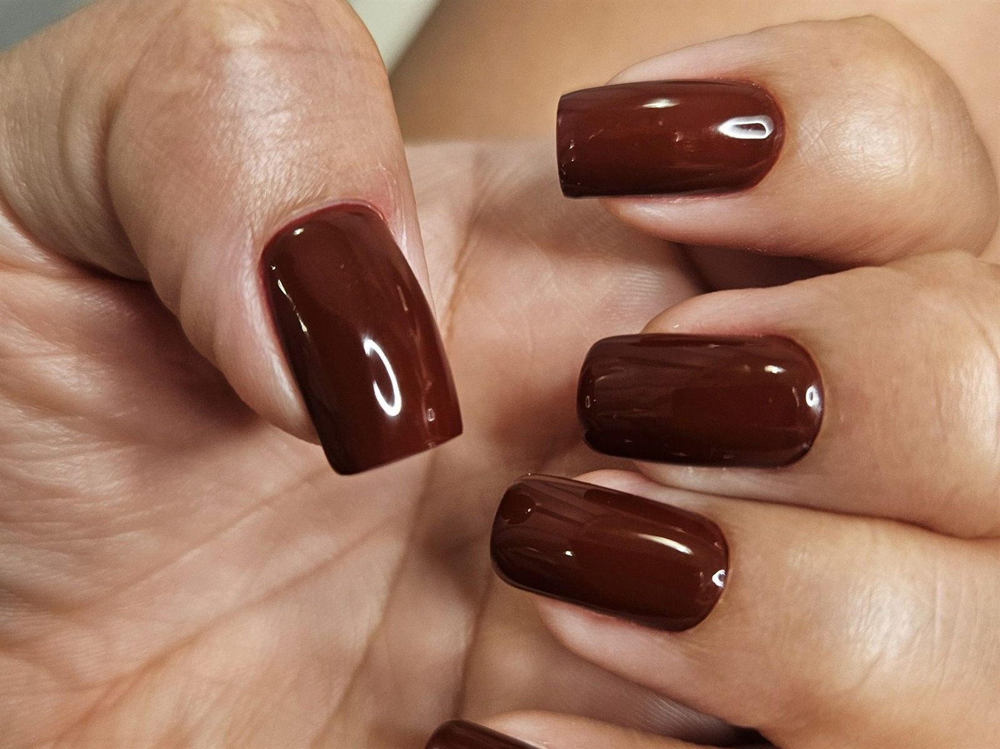
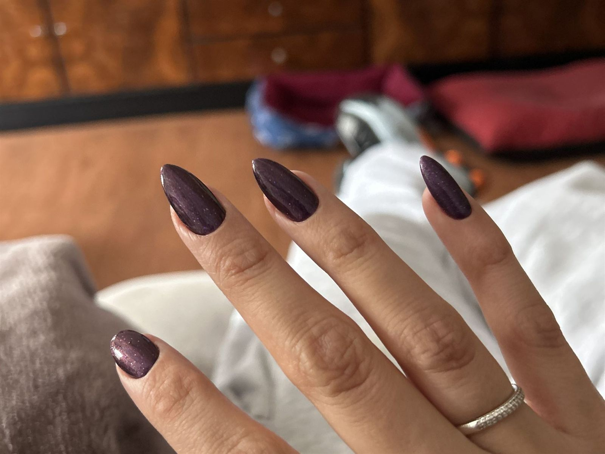
4,7 en Google con 295 reseñas y 4,8 en Booksy con 110 reseñas de clientas verificadas.
«Ruth es una profesional increíblemente talentosa. Transformó mis cabellos y les devolvió un brillo espectacular, eliminando todos los tonos amarillos que no me gustaban.»
«Fui a su peluquería con el pelo seco, destrozado y sin vida […] Ruth, en lugar de hacerlo y cobrarme mucho más por un tinte […] me recomendó algo muy diferente: primero había que sanarlo y repararlo.»
«Someone else did an awful job and Ruth did an excellent job of fixing it! So grateful»
«He salido con el pelo aclarado, bonito y, sobre todo, mucho más cuidado.»
«Una profesional excepcional, la técnica de corte y color fantástica.»